Infraestructura situada. Casa de Juventud para San Jerónimo
Proyecto Fin de Carrera


Este proyecto explora la integración de la infraestructura urbana con el entorno natural, buscando soluciones sostenibles y funcionales que mejoren la calidad de vida de los usuarios.
La propuesta incluye espacios de interacción comunitaria, zonas verdes y optimización de recursos. El proyecto se ha desarrollado dentro del marco académico con la colaboración de diferentes disciplinas.
- Título Infraestructura situada. Estrategias de intervención y Casa de Juventud para San Jerónimo
- Localización |
Barrio de San Jerónimo, Sevilla - Fecha | 2025
- Autor Pedro Tordera Arillo
- Tipo de proyecto Trabajo Fin de Máster (PFC)
- Nota obtenida: Matrícula de honor 10
- Publicado: Próximamente en el Repositorio de la Universidad de Sevilla IDUS
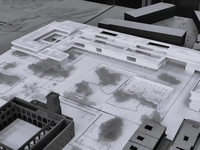
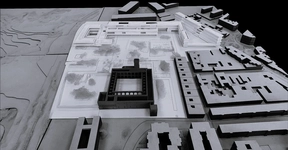
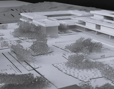
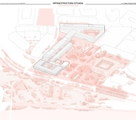
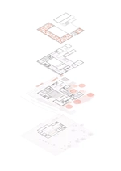
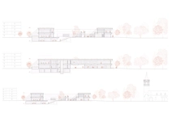
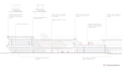
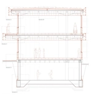
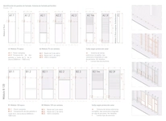
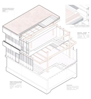
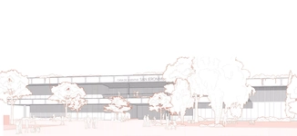
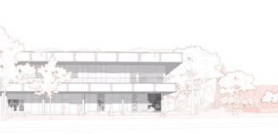